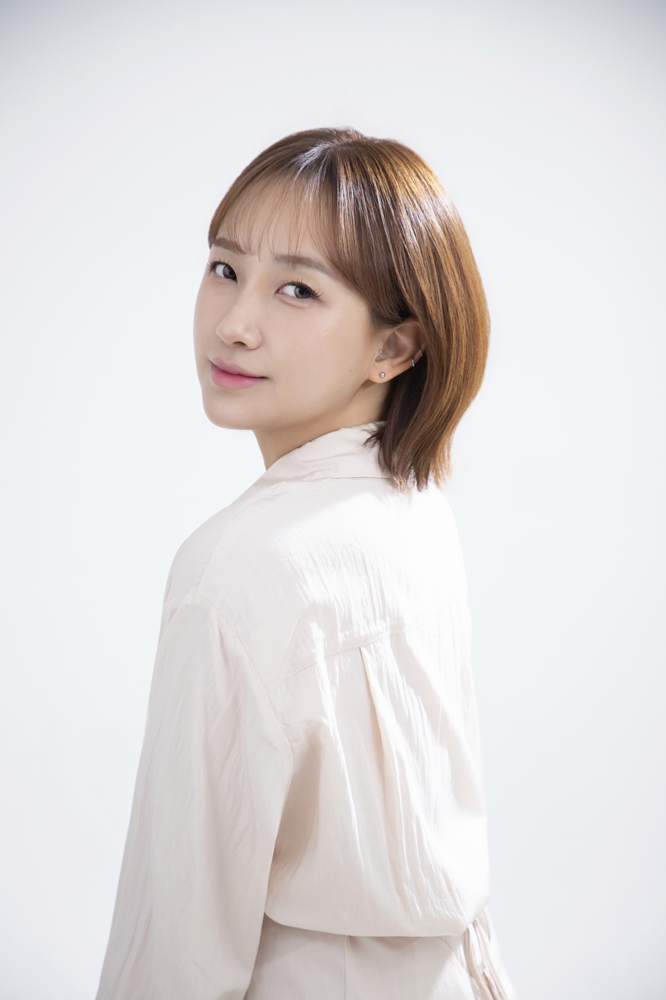
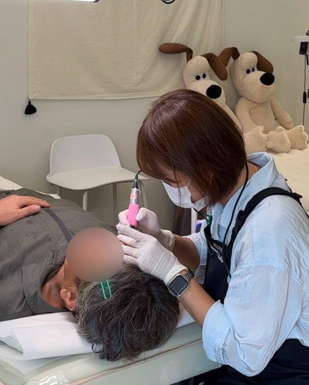
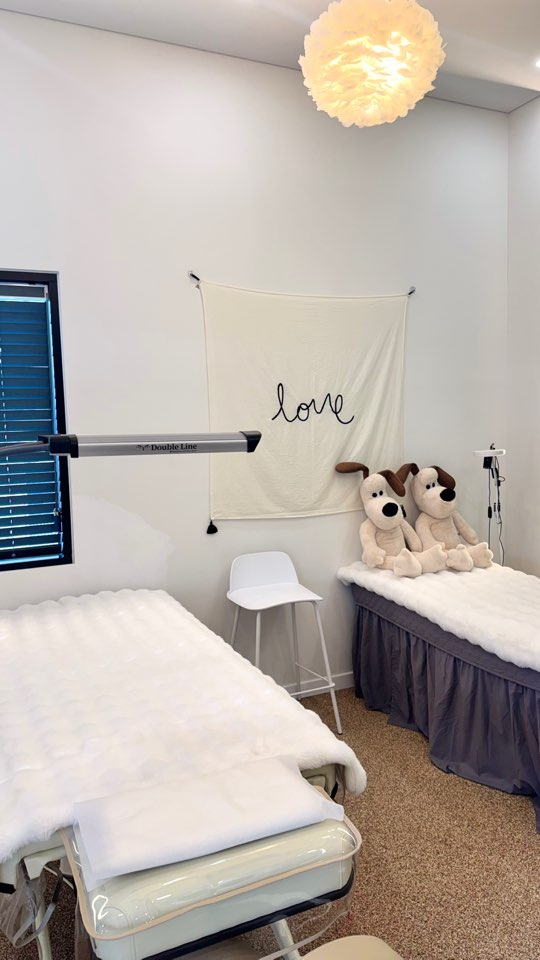
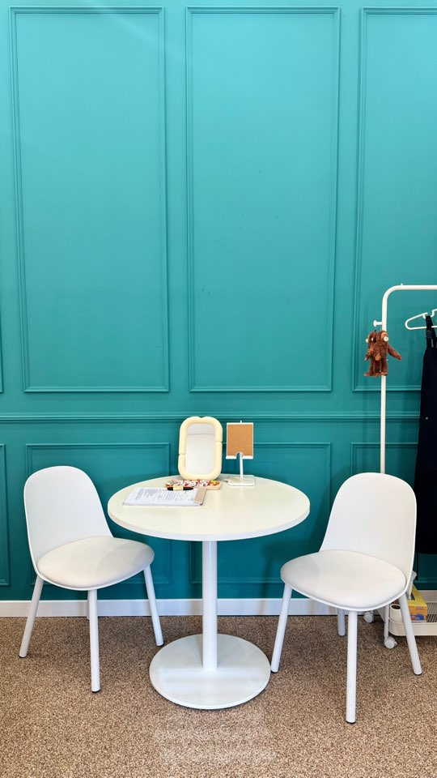
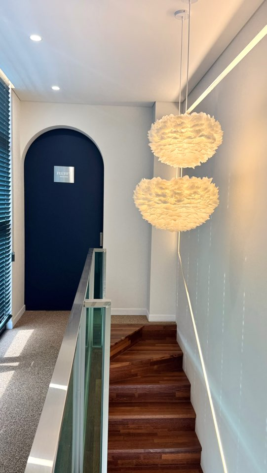

먼저 상담합니다.
현재 눈썹 상태와 원하는 이미지를 듣습니다.
양주 · 김민선 원장의 1:1 눈썹 디자인
저라도 누구에게 맡겨야 할지 고민했을 거예요.
상담을 시작하기엔 눈썹 사진 한 장이면 충분합니다.
BEFORE YOU DECIDE
플러피뷰티는 사진을 바탕으로 어울리는 방향을 함께 살펴보고,
디자인 시뮬레이션으로 예상 모습을 보여드려요.
먼저 보고, 충분히 이야기한 뒤
결정하세요.
시뮬레이션은 예상 이미지이며 실제 결과는 눈썹·피부 상태에 따라 달라질 수 있습니다.
See the real work.
아래 사진은 플러피뷰티에서 제공한 실제 눈썹 사진입니다. 마음에 드는 느낌이 있다면 상담할 때 알려주세요.
사진의 색감과 결과는 촬영 환경, 원래 눈썹과 피부 상태에 따라 달라질 수 있습니다.
시술 사진 8장 모두 보기Chapter 1.
BEFORE THE APPOINTMENT
“너무 진하면 어떡하지?”
“내 얼굴에도 자연스러울까?”
“기존 잔흔이 있어도 괜찮을까?”
원하는 분위기와 평소 눈썹을 먼저 살펴보고, 디자인 스케치를 함께 확인합니다.
유행하는 한 가지 모양보다 골격, 눈매, 지금 가진 결의 방향을 함께 봅니다.
잔흔의 색과 위치에 따라 가능한 디자인이 달라집니다. 현재 눈썹 사진을 보내주시면 상담에 도움이 됩니다.
SPECIAL EVENT · HAIR STROKE
한 올 한 올의 흐름을 살피는 헤어스트로크. 내 얼굴에 어울리는 방식인지 상담부터 확인해 보세요.
이름이 조금 생소할 수 있지만, 눈썹 한 올 한 올의 방향과 흐름을 섬세하게 표현하는 반영구 기법입니다. 양주 플러피뷰티에서 내 얼굴에 어울리는 결을 함께 찾아보세요.
Chapter 2.
MEET THE DIRECTOR
한 사람의 얼굴과 분위기를 함께 보는 일.
김민선 원장이 중요하게 생각하는 디자인의 시작입니다.

DIRECTOR · KIM MINSUN
눈썹의 모양뿐 아니라 한 사람의 얼굴과 분위기를 함께 봅니다. 현재 눈썹 상태, 원하는 느낌, 걱정되는 점을 듣고 디자인을 조율합니다.
어울리는 눈썹은
충분히 이야기하는 과정에서 시작됩니다.
It starts with you.
원하는 분위기를 정확히 설명하지 못해도 괜찮습니다. 현재 눈썹과 평소 메이크업, 걱정되는 부분을 함께 살펴봅니다.

ACTUAL PROCEDURE · FLUFFY BEAUTY현재 눈썹 상태와 원하는 이미지를 듣습니다.
골격과 눈매에 맞춰 스케치하고 조율합니다.
자연스러운 결감을 목표로 시술하고, 이후 관리 방법을 안내합니다.
The details make a difference.
사진을 누르면 가까이서 보고 넘겨볼 수 있습니다. 상담할 때 마음에 드는 결을 함께 알려주세요.
사진마다 보이는 색감과 결과는 촬영 환경, 원래 눈썹과 피부 상태에 따라 다를 수 있습니다.
내 얼굴에는 어떤 결이 어울릴까요?
눈썹 사진 보내고 상담하기Chapter 3.
BEFORE YOU VISIT
원하는 분위기와 현재 눈썹 상태를 먼저 확인하고 디자인 스케치를 함께 조율합니다. 시술 직후의 색감과 회복 과정에는 개인차가 있어 상담에서 안내합니다.
느끼는 정도는 사람마다 다릅니다. 걱정되는 점을 상담 때 먼저 말씀해 주세요. 진행 중에도 상태를 확인합니다.
잔흔의 색과 위치, 피부 상태에 따라 디자인 가능 범위가 달라집니다. 현재 눈썹 사진을 보내주시면 상담에 도움이 됩니다.
피부 상태와 생활 습관, 관리 방법에 따라 차이가 큽니다. 개인 상태를 살핀 뒤 상담에서 설명해 드립니다.
Come as you are.
플러피뷰티에서 제공한 실제 매장 사진입니다. 상담 공간부터 시술 공간까지 미리 둘러보세요.



경기 양주시 화합로1325번길 123-16 향빌딩 2층
운영시간 11:00–20:00 · 휴무일 확인 중
Your brows, your story.
LET'S TALK ABOUT YOUR BROWS
원하는 모양을 설명하기 어려워도 괜찮습니다.
현재 눈썹 사진 한 장과 걱정되는 점부터 보내주세요.
헤어스트로크란? 눈썹의 결을 한 올씩 표현하는 반영구 기법입니다.
예약 가능 일정과 리뷰 작성 방법은 상담에서 안내해 드립니다.